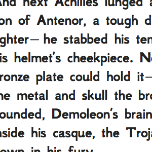
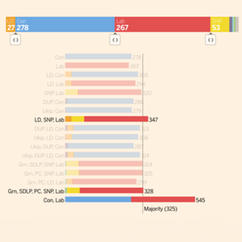
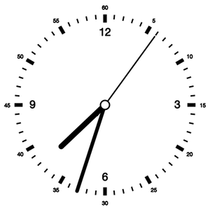

Tom Pearson
An incomplete selection of other things

Boxy: Compare things to the size of a tennis ball

Deaths of the Iliad: All the deaths of the epic poem blogged in order

Crash: 10 years worth of UK road crash data

Middle East: mapping the distribution of religions in the region

2015 General Election battlegrounds: projections for key constituencies

2005 Election results: Peter Sulivan award winning coverage



2015 coalition calculator: Quickly check possible coalitions for a particular division parliamentary seats.


